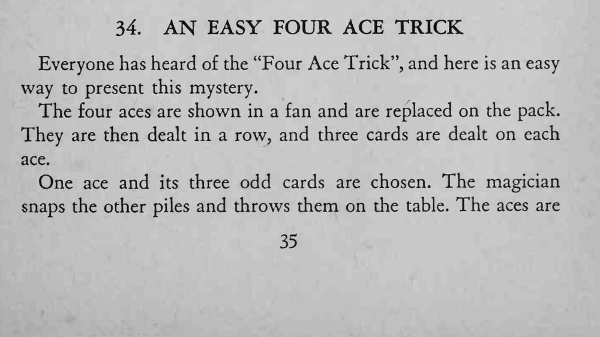
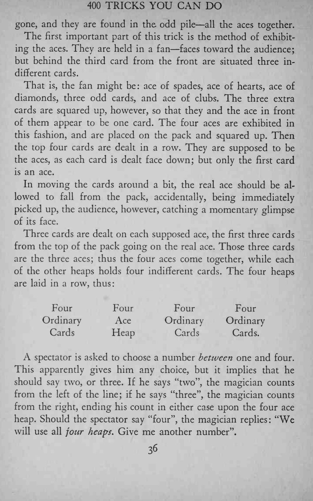
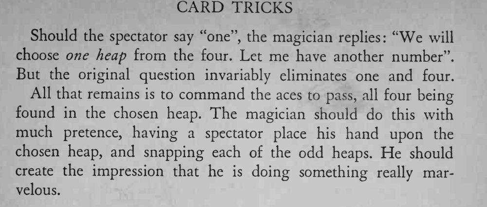

四张 A 被发成四堆、每堆压上三张牌，观众选走一堆后翻开，四张 A 竟然全都聚在剩下那一堆里。
全程用夸张的表演制造神秘感，观众的注意力就不会落在牌上。



Everyone has heard of the "Four Ace Trick", and here is an easy way to present this mystery. The four aces are shown in a fan and are replaced on the pack. They are then dealt in a row, and three cards are dealt on each ace. One ace and its three odd cards are chosen. The magician snaps the other piles and throws them on the table. The aces are gone, and they are found in the odd pile all the aces together. The first important part of this trick is the method of exhibiting the aces. They are held in a fan faces toward the audience; but behind the third card from the front are situated three indifferent cards. That is, the fan might be: ace of spades, ace of hearts, ace of diamonds, three odd cards, and ace of clubs. The three extra cards are squared up, however, so that they and the ace in front of them appear to be one card. The four aces are exhibited in this fashion, and are placed on the pack and squared up. Then the top four cards are dealt in a row. They are supposed to be the aces, as each card is dealt face down; but only the first card is an ace. In moving the cards around a bit, the real ace should be allowed to fall from the pack, accidentally, being immediately picked up, the audience, however, catching a momentary glimpse of its face. Three cards are dealt on each supposed ace, the first three cards from the top of the pack going on the real ace. Those three cards are the three aces; thus the four aces come together, while each of the other heaps holds four indifferent cards. The four heaps are laid in a row, thus: Four Four Four Four Ordinary Ace Ordinary Ordinary Cards Heap Cards Cards. A spectator is asked to choose a number between one and four. This apparently gives him any choice, but it implies that he should say two, or three. If he says "two", the magician counts from the left of the line; if he says "three", the magician counts from the right, ending his count in either case upon the four ace heap. Should the spectator say "four", the magician replies: "We will use all jour heaps. Give me another number". Should the spectator say "one", the magician replies: "We will choose one heap from the four. Let me have another number". But the original question invariably eliminates one and four. All that remains is to command the aces to pass, all four being found in the chosen heap. The magician should do this with much pretence, having a spectator place his hand upon the chosen heap, and snapping each of the odd heaps. He should create the impression that he is doing something really marvelous.